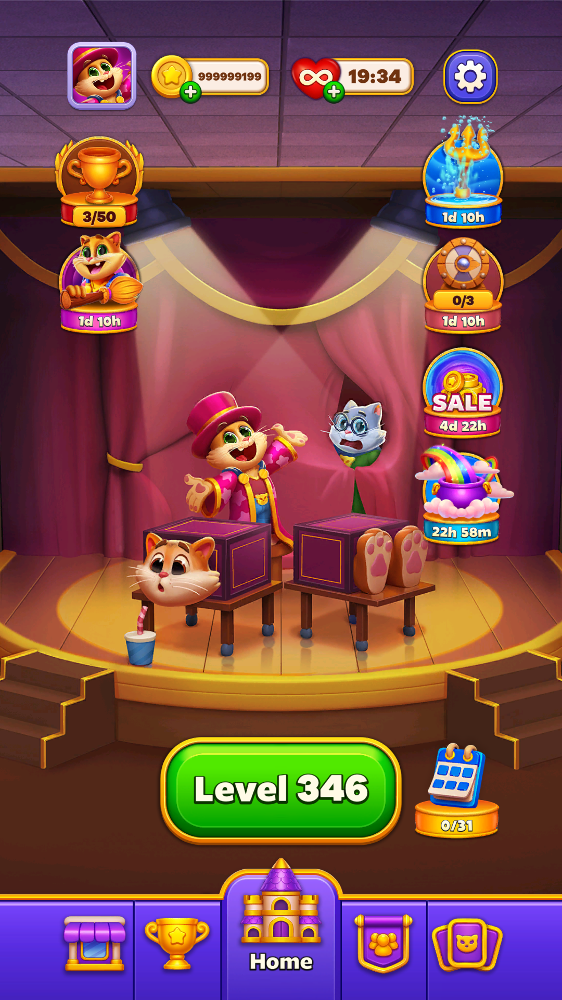
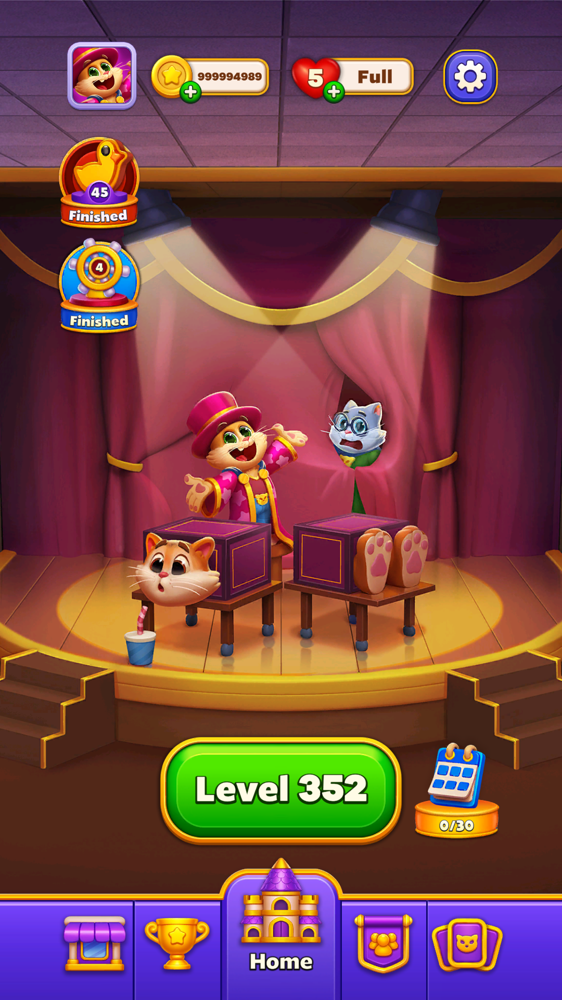
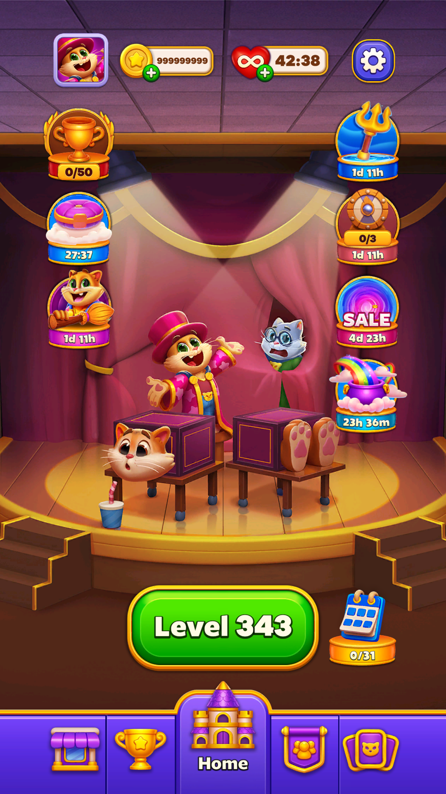
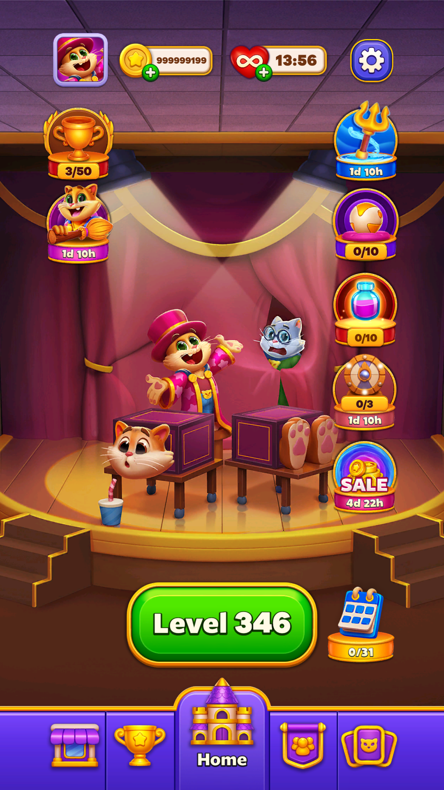
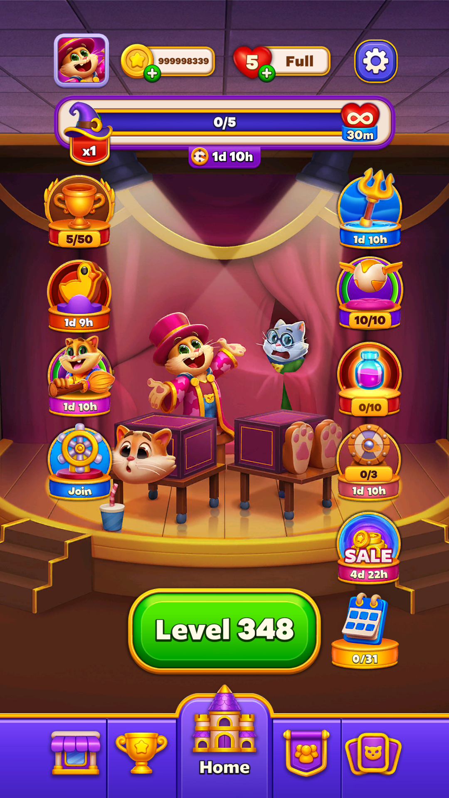
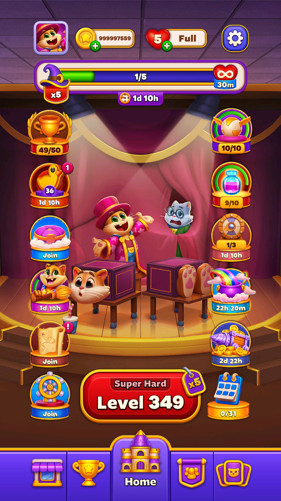
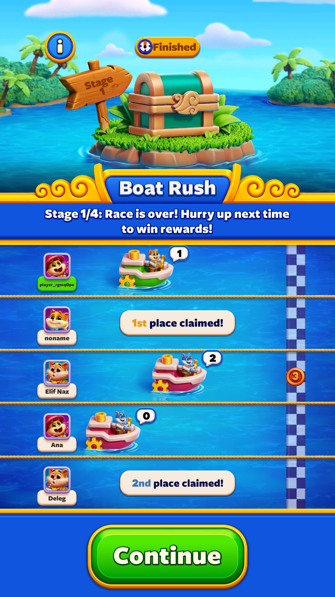

Màn hình chính (Home UI)
Home là điểm định hướng giữa tiến độ màn chơi, kinh tế và nội dung đang mở. Quyết định thiết kế chính là cho người chơi thấy việc tiếp theo mà không để popup và icon tranh quyền điều khiển.
4 UC có nhánh liên quan tới case quan sát. Chưa có kết luận toàn bộ tính năng hoặc mọi UC đã pass. Xem bằng chứng và phần còn thiếu.
Thiết kế chi tiết
Tóm tắt thiết kế
Home là điểm định hướng giữa tiến độ màn chơi, kinh tế và nội dung đang mở. Quyết định thiết kế chính là cho người chơi thấy việc tiếp theo mà không để popup và icon tranh quyền điều khiển.
Về Home → đọc level và số dư → chọn Play hoặc một đích khác → quay lại cùng ngữ cảnh.
Diễn giải thiết kế từ nguồn ghi rõ build/ngày; mô tả mã và default không thay thế kiểm chứng runtime. Phần full data, reward và UC gốc được giữ ở hồ sơ nguồn.
18 ảnh chụp có nguồn · ảnh hiện ngay trong khung, bấm để mở ảnh gốc. Màu nhãn phân biệt playtest, lịch sử và ngữ cảnh.


Luồng người chơi từng bước
- 01
Chuẩn bị điểm xuất phát
ClientDựng Home và đặt level lên vạc.
Điều kiện / luật: Bố cục còn phụ thuộc Journey, nền và biến thể icon; không xem một ảnh là toàn bộ layout.
Kết quả theo đặc tả: Người chơi nhận ra tiến độ và hành động chính.
15/11/2026 · Home navigation và số dư level 352
Playtest Sau lần vuốt kiểm tra, Home vẫn không chuyển trang; không dùng ảnh này để khẳng định swipe đã hoạt động.15/11/2026 · app 0.0.3129 · fixture offlineXem case 
Playtest Home level 352 trước lượt vào màn, với  5 mạng Full; đây cũng là mốc đối chiếu kho cho case Inventory.15/11/2026 · app 0.0.3129 · fixture offlineXem case
5 mạng Full; đây cũng là mốc đối chiếu kho cho case Inventory.15/11/2026 · app 0.0.3129 · fixture offlineXem case - 02
Đổi trang bằng kéo
Người chơi và clientKéo giữa Home, Leaderboard và Shop.
Điều kiện / luật: Mã dùng ngưỡng 0,2 và lực cản biên 5; lượt 16/11 chỉ thử kéo 650 ms hai chiều, không đo ngưỡng.
Kết quả theo đặc tả: Ba trang đổi đúng hướng; kéo vượt đầu Shop vẫn ở Shop, số dư không đổi.
16/11/2026 · Vuốt thật qua Home, Leaderboard và Shop; kiểm biên trái - 03
Đọc nội dung phụ rồi trở lại
Người chơi và clientChạm icon để xem toolbar hoặc popup; đóng để tiếp tục.
Điều kiện / luật: Toolbar chọn bố cục theo ngữ cảnh và số reward; chuỗi về Home quyết định thứ tự popup.
Kết quả theo đặc tả: Giải thích tại chỗ thay vì bắt người chơi rời vòng chính.

Ảnh lịch sử Về Home sau khi bỏ màn: vẫn Level 346, mạng vô hạn còn chạy nên không bị trừ mạngẢnh chụp lịch sử · giữ snapshot và điều kiện trong chú thíchHồ sơ ảnh lịch sử 
Ảnh lịch sử Về Home sau khi thắng: thanh Magic Streak hiện trên đầu (0/5, x1); vật phẩm sự kiện bay vào icon (đinh ba +2 vào Underwater Treasures, tiến độ Snitch); mạng hết vô hạn → "5 Full"Ảnh chụp lịch sử · giữ snapshot và điều kiện trong chú thíchHồ sơ ảnh lịch sử

Quy tắc cần nắm
| Quy tắc | Hành vi theo nguồn | Căn cứ |
|---|---|---|
| Không đồng nhất thao tác | Kéo trang đã được quan sát; nhảy trang, preload và snapback ngắn là các nhánh riêng. | |
| Ưu tiên thị giác | Các ô icon trái/phải có giới hạn và được xếp lại khi trạng thái sự kiện đổi. | |
| Nhịp chuyển trạng thái | Hiệu ứng đổi số level có độ trễ nguồn 1,25 giây ở màn thường và 0,1 giây ở màn khó; đây là hằng mã, chưa đo bằng runtime mới. |
Số liệu & phần thưởng
Phần thưởng
CÁC ROUTE TRONG ENUM PageType (không đồng nghĩa tất cả là trang vuốt)
| Giá trị | Trang | Ghi chú |
|---|---|---|
| 0 | None | Giá trị rỗng |
| 1 | Shop | Cửa hàng |
| 2 | Leaderboard | Bảng xếp hạng |
| 3 | Home | Trang giữa có nút Play và vạc |
| 4 | Teams | Đội và chat |
| 5 | Settings | Cài đặt |
| 6 | Journey | Chỉ có khi Journey bật |
| 7 | Collection | Chỉ có khi Collection bật |
NGỮ CẢNH VÀ MÀU CỦA TOOLBAR
| Nhóm | Giá trị | Ghi chú |
|---|---|---|
| ToolbarContext | SkyJump=0, Tower=1, JetpackRace=2, Daily=3, EndlessPortal=4, PlainText=5, Null=6, MagicPass=7, TeamQuest=8, BoatRush=9 | Quyết định hàm dựng thân toolbar |
| ToolbarAssetColor | Purple=0, Green=1, Pink=2, Gold=3, Orange=4, DarkGreen=5, Brown=6 | Bộ sprite thân và mũi tên |
| ToolbarDirection | Default=0, Up=1, Down=2 | Hướng mũi tên |
| Bề ngang thân theo số phần thưởng | 1 nội dung 1.75; 2 nội dung 3.1; 3 nội dung 4.5; 4 nội dung 6.15 | XSizeFor1..4Content |
| Chiều cao thân theo số hàng | 1 hàng 1.6; 2 hàng 2.65 | YSizeFor1Row / YSizeFor2Row |
| Kích thước cố định cho toolbar chữ | (6, 2) một hàng; (6, 3.2) hai hàng | ToolbarConstantSize / ToolbarConstantSizeDoubleRow |
| Kiểu chữ ToolbarContext 0 (SkyJump) | TextMinMaxSize (5.5, 1.7), FontSize 3.7, offset (0, 2), padding (0.3, 0.2) | ToolbarTextModels |
| Kiểu chữ ToolbarContext 2 (JetpackRace) | TextMinMaxSize (5.5, 0.5), FontSize 3, offset (0, 0.65), padding (0, 0) | ToolbarTextModels |
HẰNG SỐ HOẠT ẢNH CỦA HOME (HomeAnimationsConfig)
| Tham số | Giá trị | Ý nghĩa |
|---|---|---|
| OnRegularLevelWinsLevelTextChangeDelay | 1.25 giây | Độ trễ đổi số level sau khi thắng level thường |
| OnHardLevelWinsLevelTextChangeDelay | 0.1 giây | Độ trễ đổi số level sau khi thắng level khó |
| IntervalBeforeSmokeParticles | 1.3 giây | Chờ trước khi phát khói |
| AfterSuperHardSmokeDelay | 1.4 giây | Độ trễ sau hiệu ứng khói của level siêu khó |
| UIOutsideOffset | 7 | Khoảng trượt UI ra ngoài màn hình |
| UIHideDuration | 0.4 giây | Thời lượng ẩn UI |
| SwipeThreshold | 0.2 | Ngưỡng quãng vuốt để nhảy sang trang kế |
| ScrollResistance | 5 | Hệ số hãm khi kéo quá biên |
| StartScale | 0.4 | Tỉ lệ bắt đầu khi mở toolbar |
| ToolbarWithTextScaleDuration | 0.125 giây | Thời lượng animation mở toolbar chữ |
| OutOfScreenOffsetFactor | 0.2 | Hệ số kéo toolbar vào trong màn hình |
Phần thưởng theo code
| Ngữ cảnh | Phần thưởng | Evidence |
|---|---|---|
| Toolbar hiển thị phần thưởng sự kiện | RewardModel truyền vào ToolbarModel (không tự phát thưởng) | ToolbarService.GetCurrencyModelViews |
Số liệu chính
| Chỉ số | Giá trị | Nguồn |
|---|---|---|
| Số route được khai báo trong PageType | 7 giá trị khác None (Shop … Collection); không phải số trang vuốt đang được cấu hình | PageType của mã 0.0.3063; số và thứ tự trang cần đối chiếu danh sách SwipePageManager |
| Ngưỡng vuốt đổi trang | 0.2 | SwipePageManager.SwipeThreshold |
| Hệ số hãm khi kéo quá biên | 5 | SwipePageManager.ScrollResistance |
| Số ngữ cảnh toolbar | 10 (SkyJump=0 … BoatRush=9) | ToolbarContext |
| Số màu toolbar | 7 (Purple=0 … Brown=6) | ToolbarAssetColor |
| Số hướng mũi tên toolbar | 3 (Default=0, Up=1, Down=2) | ToolbarDirection |
| Bề ngang thân toolbar | 1.75 / 3.1 / 4.5 / 6.15 theo 1–4 nội dung | ToolbarConfig.XSizeFor1..4Content |
| Chiều cao thân toolbar | 1.6 (1 hàng) và 2.65 (2 hàng) | ToolbarConfig.YSizeFor1Row / YSizeFor2Row |
| Khoảng cách giữa phần thưởng trong toolbar | X 1.5, Y 1.2 | ToolbarConfig.XDistanceBetweenContents / YDistanceBetweenContents |
| Kích thước cố định toolbar chữ | (6, 2) và (6, 3.2) | ToolbarConfig.ToolbarConstantSize / ToolbarConstantSizeDoubleRow |
| Tỉ lệ bắt đầu khi mở toolbar | 0.4 | ToolbarConfig.StartScale |
| Thời lượng animation mở toolbar chữ | 0.125 giây | ToolbarConfig.ToolbarWithTextScaleDuration |
| Hệ số kéo toolbar vào trong màn hình | 0.2 | ToolbarConfig.OutOfScreenOffsetFactor |
| Độ trễ đổi số level sau thắng level thường | 1.25 giây | HomeAnimationsConfig.OnRegularLevelWinsLevelTextChangeDelay |
| Độ trễ đổi số level sau thắng level khó | 0.1 giây | HomeAnimationsConfig.OnHardLevelWinsLevelTextChangeDelay |
| Chờ trước khi phát khói | 1.3 giây | HomeAnimationsConfig.IntervalBeforeSmokeParticles |
| Độ trễ sau khói level siêu khó | 1.4 giây | HomeAnimationsConfig.AfterSuperHardSmokeDelay |
| Khoảng trượt UI ra ngoài màn hình | 7 | HomeAnimationsConfig.UIOutsideOffset |
| Thời lượng ẩn UI | 0.4 giây | HomeAnimationsConfig.UIHideDuration |
| Số cột icon sự kiện | 2 (Left=0, Right=1) | LobbyIconPositionType |
| Số loại biến thể icon lobby | 4 (SpriteRenderer, Size, Position, DisableGameObjects) | LobbyIconVariantController |
| Bù vị trí phần tử toolbar | PostToolBarElementsOffset (0, 0.1, 0) | ToolbarConfig.asset |
| Số trường của ToolbarModel | 10 | ToolbarModel |
Các quyết định trong luồng
| Tình huống | Cách xử lý theo nguồn | Căn cứ |
|---|---|---|
| Vì sao cần lực cản ở biên? | Cho phản hồi rằng danh sách đã hết mà không điều hướng sang đích không tồn tại. | Native flow và trường hợp kéo vượt Shop. |
| Toolbar thay popup lớn khi nào? | Khi chỉ cần giải thích reward hoặc một nhãn theo ngữ cảnh. | Các hàm dựng toolbar riêng và thao tác đóng ngoài. |
| Ảnh Home có chứng minh event đang chạy không? | Chỉ chứng minh icon hoặc trạng thái nhìn thấy tại thời điểm đó; cần cache và entry riêng. | Fixture offline và nguồn trạng thái sự kiện tách riêng. |
Nhánh lỗi và phục hồi
| Điều kiện | Hành vi mong đợi | Phạm vi đã kiểm |
|---|---|---|
| Kéo quá biên | Giữ đích hợp lệ và phản hồi lực cản. | Đã quan sát ở đầu Shop; không kiểm mọi biên. |
| Popup đang chiếm Home | Chờ điều kiện rảnh tay hoặc đóng popup trước thao tác khác. | Luật nguồn; chưa đo mọi interceptor. |
Nhận định & vận dụng
Đặt Play và tiến độ làm trục, icon là nhánh phụ.
Cấu trúc Home và chuỗi về Home.
Kiểm riêng gesture, navigation và popup queue.
Một lượt kéo thành công không phủ các UC khác.
Ảnh chụp bổ sung & nguồn bằng chứng
Mô tả trạng thái hoặc bước nhìn thấy trong ảnh và ngữ cảnh case; không nâng preview, cache hay lỗi thành grant, online hoặc full UC pass.
Không coi ảnh lịch sử hoặc ảnh ép bật bằng fixture là trạng thái production hiện tại.
Những ảnh còn lại của tính năng được giữ mở sẵn bên dưới. Các ảnh đã đặt ở phần tóm tắt hoặc bước liên quan không lặp lại trong gallery này.




 1 giờ mạng vô hạn: ô mạng hiện ∞ 58:53; các icon sự kiện hai bên (Master League, Sky Jump, Broom Streak, Underwater Treasures, Wheel of Fortune, SALE/Endless Portal), Daily 0/31Ảnh chụp lịch sử · giữ snapshot và điều kiện trong chú thíchHồ sơ ảnh lịch sử
1 giờ mạng vô hạn: ô mạng hiện ∞ 58:53; các icon sự kiện hai bên (Master League, Sky Jump, Broom Streak, Underwater Treasures, Wheel of Fortune, SALE/Endless Portal), Daily 0/31Ảnh chụp lịch sử · giữ snapshot và điều kiện trong chú thíchHồ sơ ảnh lịch sử








Case đầy đủ: expected, actual và ledger · Ảnh lịch sử và tài nguyên gốc
Tổng quan & điều kiện mở
Mô tả
- Code0.0.3063 mô tả các page route theo SwipePageManager; UI0.0.3129 ngày15/11 có thanh dưới Shop/Leaderboard/Home/Teams/Collection và Settings dạng popup bánh răng. Không coi tên enum page là bố cục đã quan sát.
- Trang Home ở giữa có nút Play lớn, vạc phép hiển thị số level và độ khó, thanh tiền tệ trên cùng và hai cột icon sự kiện trái phải.
- Vị trí icon sự kiện được sắp xếp lại mỗi khi trạng thái sự kiện đổi, và cả cột dịch chỗ khi có thanh tiến độ Magic Streak.
- Toolbar là bong bóng tooltip đa dụng bật lên từ bất kỳ icon nào, có 10 ngữ cảnh và 7 màu thân.
- Kích thước thân toolbar tự đổi theo số phần thưởng hiển thị, xếp thành một hoặc hai hàng, và mũi tên tự chọn hướng lên hay xuống.
- Home có cơ chế phát hiện người chơi rảnh tay để popup và việc khởi động lại chỉ chen vào lúc không làm phiền.
- Toàn bộ UI có thể trượt ra ngoài màn hình bằng một animation chung trước khi chuyển cảnh vào level.
- Có bộ scaler riêng cho màn hình nhỏ, co giãn cả dải trang lẫn kích thước camera.
- Home không gọi backend trực tiếp; mọi dữ liệu đến từ các service khác.
Mở khóa & điểm vào
Home có ngay sau màn loading. Bố cục thay đổi theo remote config: 'IsNewLobbyIconsEnabled' (LobbyIconVariantController.InitializeInternal(isNewLobbyIconEnabled)), 'IsBackgroundAndShelvesEnabled' và 'IsSmallBackgroundEnable' (HomeController.UpdateHomeBackground), 'ColorVariant'. Số trang trong SwipeMenu đổi theo Journey bật/tắt (_swipePageControllersJourneyOn / _swipePageControllersJourneyOff).
Điểm vào:
- Sau màn loading (LoadingCircleManager, LoadingCat)
- Quay về từ level (ReturnToHomeSequenceService)
- Vuốt ngang giữa các trang (SwipePageManager.OnDrag)
- Nút điều hướng dưới cùng (SwipeMenuManager, NavigationManagerAnimationConfig)
- Chạm vào biểu tượng sự kiện để mở toolbar (ToolbarService.SetToolbarModel)
Luồng chi tiết theo nguồn
Cách hoạt động
- Khi vào Home, controller lưu vị trí gốc của thanh trên, hai cột icon, gốc nút Play và thanh Magic Streak để sau này trả về đúng chỗ (Initialize).
- Nền Home được chọn theo remote config IsBackgroundAndShelvesEnabled và IsSmallBackgroundEnable (UpdateHomeBackground).
- Biến thể icon lobby áp theo cờ IsNewLobbyIconsEnabled, với 4 loại biến thể: sprite, kích thước, vị trí và tắt object.
- Số level được đặt lên vạc kèm màu theo độ khó (PrepareHomeUi, CauldronController.Prepare).
- Sau khi thắng, hiệu ứng đổi số chạy sau 1.25 giây với level thường hoặc 0.1 giây với level khó; level siêu khó có khói phát sau 1.3 giây và chờ thêm 1.4 giây.
- Vuốt ngang được đo theo quãng dịch chuyển: vượt ngưỡng 0.2 thì nhảy sang trang kế, không thì trượt về trang gần nhất (SwipeThreshold).
- Mỗi lần đổi trang, các controller liên quan nhận OnPageSelected(PageType) để tự làm mới nội dung.
- Trang kế bên được nạp trước khi sắp lộ ra và chỉ khởi tạo một lần nhờ danh sách trang đã peek (TryUpdatePeekPages).
- Icon sự kiện được xếp lại vào các ô trống của cột trái (Left=0) và cột phải (Right=1) mỗi khi trạng thái sự kiện đổi (RepositionButtons).
- Bấm một icon sẽ gửi ToolbarModel gồm Requester, vị trí, text, RewardModel, ngữ cảnh và màu, rồi thân bong bóng được dựng theo ngữ cảnh đó.
- Bề ngang thân toolbar chọn theo số phần thưởng (1.75, 3.1, 4.5, 6.15) và chiều cao theo số hàng (1.6 hoặc 2.65); phần thưởng cách nhau 1.5 theo X và 1.2 theo Y.
- Toolbar dạng chữ dùng kích thước cố định (6, 2) hoặc (6, 3.2) cho hai hàng, với kiểu chữ riêng theo từng ngữ cảnh.
- Toolbar mở bằng animation phóng từ tỉ lệ 0.4 trong 0.125 giây, và đóng khi người chơi chạm ra ngoài (CheckForInput trong LateUpdate).
- Thanh tiền tệ nghe sự kiện từ kho đồ, chạy tween số khi số dư đổi và cập nhật đồng hồ đếm ngược mỗi giây cho các vật phẩm có thời hạn.
- Trước khi mở popup hoặc khởi động lại game, hệ thống chờ người chơi rảnh tay bằng cách hỏi các nguồn ngắt như bộ vuốt trang (WaitForPlayerToBeIdle).
- Khi vào level, toàn bộ UI trượt ra ngoài màn hình khoảng cách 7 trong 0.4 giây rồi mới chuyển cảnh (HideUI).
Luồng chi tiết theo code
HomeController.Initialize() lưu vị trí gốc của _topUi, _iconsLeft, _iconsRight, _playButtonRoot, _magicStreakGae rồi UpdateHomeBackground() chọn nền theo cấu hình. PrepareHomeUi(level) đặt số level lên vạc (CauldronController.Prepare(level, levelDifficultyType)); sau khi thắng level, PlayLevelTextChangeAnimations() chạy hiệu ứng đổi số với độ trễ OnRegularLevelWinsLevelTextChangeDelay = 1.25 s (level thường) hoặc OnHardLevelWinsLevelTextChangeDelay = 0.1 s (level khó), kèm khói (IntervalBeforeSmokeParticles = 1.3 s, AfterSuperHardSmokeDelay = 1.4 s). HideUI()/ShowUI() trượt toàn bộ UI ra ngoài màn hình theo UIOutsideOffset = 7 với UIHideDuration = 0.4 s / UIShowDuration và các AnimationCurve trong HomeAnimationsConfig. SwipePageManager là UITouchableElement: OnTouchDown/OnDrag đo dịch chuyển, GetResistedDragAmount() giảm tốc khi kéo quá biên (ScrollResistance = 5), OnTouchUp so quãng vuốt với SwipeThreshold = 0.2 để MoveToLeftPage/MoveToRightPage hoặc MoveToNearestPage; GetIndexByPageType(PageType)/GetPageTypeByIndex(index) ánh xạ trang; TryUpdatePeekPages() nạp trước trang kế bên (_peekedPageIndexes). Mỗi lần đổi trang, các controller nhận OnPageSelected(PageType) (TeamChatController, LeaderboardController, FriendsNavBarNotificationController...). LobbyEventsPositionManager.OnEventStateChanged() gọi RepositionButtons() xếp lại biểu tượng vào các ô _leftEventButtonPositions/_rightEventButtonPositions theo LobbyIconPositionType (Left=0, Right=1) và dịch cả cột khi có thanh tiến độ Magic Streak. Toolbar: một hệ thống bấm biểu tượng → SetToolbarModel(ToolbarModel{Requester, SpawnPositionTransform, Text, RewardModel, Parent, DownwardsToolbar, HorizontalToolbar, RightmostToolbar, ToolbarContext, ToolbarAssetColor}) → ShowToolbar() chọn hàm dựng theo ngữ cảnh (ConstructPlainTextToolbarBody, ConstructJetpackToolbarBody, ConstructDailyToolbarBody, ConstructSkyJumpToolbarBody, ConstructTowerToolbarBody, ConstructMagicPassToolbarBody, ConstructTeamQuestToolbarBody, ConstructBoatRushToolbarBody), tính kích thước thân theo số phần thưởng (XSizeFor1..4Content, YSizeFor1Row/YSizeFor2Row), xếp phần thưởng thành 1–2 hàng (GetRowCounts) và đặt mũi tên (SetArrowPositionAndRotation) hướng lên/xuống; CheckForInput() trong LateUpdate đóng toolbar khi chạm ra ngoài.
Use case (18)
Đặc tả UC mô tả hành vi theo nguồn. Kết quả mong đợi không phải kết quả đã chạy; case quan sát được liên kết riêng ở từng UC.
Bấm vào từng use case để mở. Mở/đóng tất cả
UC-01 Chuẩn bị Home sau loading
Chưa có case trực tiếp trong hai lượt review 15–16/11.
Các bước- HomeController.Initialize() lưu vị trí gốc các nhóm UI
- UpdateHomeBackground() chọn nền theo remote config ('IsBackgroundAndShelvesEnabled', 'IsSmallBackgroundEnable')
- PrepareHomeUi(level) đặt số level lên Cauldron
- LobbyIconVariantController.Initialize() áp biến thể biểu tượng theo 'IsNewLobbyIconsEnabled'
| Actor | System |
|---|---|
| Trigger | Vào Home lần đầu trong phiên |
| Điều kiện | Dữ liệu người chơi đã nạp |
| Kết quả mong đợi theo nguồn | Home hiển thị đúng biến thể A/B của bố cục |
| Quy tắc / số liệu | LobbyIconVariantController có 4 loại biến thể: SpriteRendererVariant, SizeVariant, PositionVariant, DisableGameObjectsVariant |
| Bằng chứng đặc tả | HomeController.Initialize; HomeController.UpdateHomeBackground; HomeController.PrepareHomeUi; LobbyIconVariantController.InitializeInternal |
UC-02 Vuốt chuyển trang
Có bằng chứng một số nhánh; chưa full UC pass.
16/11/2026 · Vuốt thật qua Home, Leaderboard và Shop; kiểm biên tráiCác bước- SwipePageManager.OnTouchDown(position) → OnDragStart → StartDragging()
- OnDrag(position) tính dịch chuyển, đẩy vào _displacementQueue
- Kéo quá biên → GetResistedDragAmount(dragAmount, distanceFromLimit) làm chậm lại (ScrollResistance = 5)
- OnTouchUp → EndTouch(): nếu quãng vuốt vượt SwipeThreshold = 0.2 thì MoveToLeftPage()/MoveToRightPage(), ngược lại MoveToNearestPage()
- StartMove(position) chạy tween tới GetMovePositionByIndex(index)
- Các controller nhận OnPageSelected(PageType)
| Actor | Player |
|---|---|
| Trigger | Kéo ngang trên màn hình Home |
| Điều kiện | Không có popup chặn |
| Kết quả mong đợi theo nguồn | Chuyển mượt giữa Shop / Leaderboard / Home / Teams / Settings (và Journey, Collection) |
| Quy tắc / số liệu | PageType: None=0, Shop=1, Leaderboard=2, Home=3, Teams=4, Settings=5, Journey=6, Collection=7 |
| Bằng chứng đặc tả | SwipePageManager.OnDrag; SwipePageManager.EndTouch; SwipePageManager.MoveToNearestPage; SwipePageManager.SwipeThreshold; SwipePageManager.ScrollResistance; PageType |
UC-03 Nhảy thẳng tới một trang
Có bằng chứng một số nhánh; chưa full UC pass.
15/11/2026 · Home navigation và số dư level 352Các bước- GetIndexByPageType(pageType) đổi PageType sang chỉ số
- MoveToPage(index) có animation hoặc MoveToPageImmediately(index) không animation
| Actor | System |
|---|---|
| Trigger | Deeplink, popup hoặc nút điều hướng |
| Điều kiện | - |
| Kết quả mong đợi theo nguồn | Mở đúng trang mà không cần vuốt |
| Quy tắc / số liệu | Danh sách trang khác nhau khi Journey bật/tắt (_swipePageControllersJourneyOn / Off) nên phải tra chỉ số qua PageType |
| Bằng chứng đặc tả | SwipePageManager.GetIndexByPageType; SwipePageManager.MoveToPage; SwipePageManager.MoveToPageImmediately |
UC-04 Nạp trước trang kế bên khi kéo
Chưa có case trực tiếp trong hai lượt review 15–16/11.
Các bước- TryUpdatePeekPages() phát hiện trang sắp lộ ra
- Ghi vào _peekedPageIndexes để chỉ khởi tạo một lần
- TryGetSecondNearestPageIndexByWorldDistanceInSwipeThreshold(out secondNearestIndex) xác định trang thứ hai gần nhất
| Actor | System |
|---|---|
| Trigger | Đang kéo tới gần trang bên cạnh |
| Điều kiện | - |
| Kết quả mong đợi theo nguồn | Không giật khi trang mới xuất hiện |
| Quy tắc / số liệu | GetLimit()/_limitCache cache biên trái–phải để không tính lại mỗi khung hình |
| Bằng chứng đặc tả | SwipePageManager.TryUpdatePeekPages; SwipePageManager.TryGetSecondNearestPageIndexByWorldDistanceInSwipeThreshold; SwipePageManager.GetLimit |
UC-05 Hiển thị số level trên vạc (Cauldron)
Có bằng chứng một số nhánh; chưa full UC pass.
15/11/2026 · Home navigation và số dư level 352Các bước- CauldronController.Prepare(level, levelDifficultyType) đặt số và màu theo độ khó
- Sau khi thắng: HomeController.PlayLevelTextChangeAnimations() → CauldronController.PlayLevelTextChangeAnimations(level, levelDifficulty)
- Độ trễ: OnRegularLevelWinsLevelTextChangeDelay = 1.25 s hoặc OnHardLevelWinsLevelTextChangeDelay = 0.1 s
- Khói cho level siêu khó: IntervalBeforeSmokeParticles = 1.3 s, AfterSuperHardSmokeDelay = 1.4 s
| Actor | System |
|---|---|
| Trigger | Vào Home hoặc thắng level |
| Điều kiện | - |
| Kết quả mong đợi theo nguồn | Người chơi thấy số level tăng với hiệu ứng ăn khớp độ khó |
| Quy tắc / số liệu | Giá trị lấy từ HomeAnimationsConfig.asset |
| Bằng chứng đặc tả | CauldronController.Prepare; CauldronController.PlayLevelTextChangeAnimations; HomeController.PlayLevelTextChangeAnimations; HomeAnimationsConfig |
UC-06 Ẩn/hiện toàn bộ UI Home
Chưa có case trực tiếp trong hai lượt review 15–16/11.
Các bước- HomeController.HideUI() trả về Sequence trượt _topUi, _iconsLeft, _iconsRight, _playButtonRoot, _magicStreakGae ra ngoài theo UIOutsideOffset = 7
- Thời lượng UIHideDuration = 0.4 s với UIHideCurve
- ShowUI() đưa về vị trí gốc theo UIShowDuration/UIShowCurve
| Actor | System |
|---|---|
| Trigger | Mở popup toàn màn hình hoặc bắt đầu vào level |
| Điều kiện | - |
| Kết quả mong đợi theo nguồn | Chuyển cảnh gọn gàng, không chồng lấn UI |
| Quy tắc / số liệu | Vị trí gốc được lưu từ Initialize() nên luôn trả đúng chỗ |
| Bằng chứng đặc tả | HomeController.HideUI; HomeController.ShowUI; HomeAnimationsConfig.UIOutsideOffset; HomeAnimationsConfig.UIHideDuration |
UC-07 Sắp xếp lại biểu tượng sự kiện ở lobby
Chưa có case trực tiếp trong hai lượt review 15–16/11.
Các bước- LobbyEventsPositionManager.OnEventStateChanged()
- RepositionButtons(_leftButtons, _leftEventButtonPositions) và tương tự cho cột phải
- RepositionButton(button, buttonPosition) đặt từng biểu tượng vào ô trống
- Khi có thanh Magic Streak GAE, cột dùng _iconsLeftPositionWithMagicStreakGae / _iconsRightPositionWithMagicStreakGae
- _rightFixedButton luôn giữ _rightFixedPosition
| Actor | System |
|---|---|
| Trigger | Sự kiện bật/tắt (OnEventStateChanged) |
| Điều kiện | - |
| Kết quả mong đợi theo nguồn | Biểu tượng sự kiện luôn xếp sát nhau, không để lỗ trống khi một sự kiện kết thúc |
| Quy tắc / số liệu | LobbyIconPositionType: Left=0, Right=1 |
| Bằng chứng đặc tả | LobbyEventsPositionManager.OnEventStateChanged; LobbyEventsPositionManager.RepositionButtons; LobbyEventsPositionManager.RepositionButton; LobbyIconPositionType |
UC-08 Mở toolbar mô tả phần thưởng
Chưa có case trực tiếp trong hai lượt review 15–16/11.
Các bước- Biểu tượng gọi ToolbarService.SetToolbarModel(ToolbarModel) với Requester, SpawnPositionTransform, RewardModel, ToolbarContext, ToolbarAssetColor
- ShowToolbar() → ConstructToolbarBody() chọn hàm dựng theo ToolbarContext
- GetCurrencyModelViews(rewardModel) lấy CurrencyView từ CurrencyViewFactory
- SetBodySizeForRewards(contentCount) chọn XSizeFor1Content = 1.75 / XSizeFor2Content = 3.1 / XSizeFor3Content = 4.5 / XSizeFor4Content = 6.15 và YSizeFor1Row = 1.6 / YSizeFor2Row = 2.65
- GetRowCounts(contentCount, out topRowCount, out bottomRowCount) chia 1–2 hàng, SetRewardModelPositions() đặt vị trí (khoảng cách X = 1.5, Y = 1.2)
- SetArrowPositionAndRotation() đặt mũi tên (ConstantArrowHeightDownwards / ConstantArrowHeightUpwards)
- ToolbarOpenAnimation() phóng từ StartScale = 0.4 trong ToolbarWithTextScaleDuration = 0.125 s theo ToolbarWithTextScaleEase
| Actor | Player |
|---|---|
| Trigger | Chạm vào một biểu tượng sự kiện |
| Điều kiện | - |
| Kết quả mong đợi theo nguồn | Bong bóng hiện phần thưởng của sự kiện ngay cạnh biểu tượng |
| Quy tắc / số liệu | GetXOffsetForScreenCenter(requestedPosition) và OutOfScreenOffsetFactor = 0.2 kéo toolbar vào trong màn hình khi biểu tượng ở sát mép |
| Bằng chứng đặc tả | ToolbarService.SetToolbarModel; ToolbarService.ConstructToolbarBody; ToolbarService.SetBodySizeForRewards; ToolbarService.GetRowCounts; ToolbarService.SetArrowPositionAndRotation; ToolbarService.ToolbarOpenAnimation; ToolbarConfig |
UC-09 Toolbar dạng chữ theo ngữ cảnh sự kiện
Chưa có case trực tiếp trong hai lượt review 15–16/11.
Các bước- ConstructPlainTextToolbarBody() và các bản riêng cho Jetpack/Daily/SkyJump/MagicPass/BoatRush chọn ToolbarTextModel khớp ToolbarContext
- SetTextModel(textModel) áp TextMinMaxSize, TextColor, TextFontSize, TextOffsetFromCenter, Padding
- SetToolbarText(text) đổ nội dung (ToolbarModel.Text)
- SetBodySize(ToolbarConstantSize = (6, 2) hoặc ToolbarConstantSizeDoubleRow = (6, 3.2))
| Actor | System |
|---|---|
| Trigger | Sự kiện cần dòng mô tả thay vì phần thưởng |
| Điều kiện | - |
| Kết quả mong đợi theo nguồn | Cùng một khung toolbar phục vụ mọi sự kiện với kiểu chữ riêng |
| Quy tắc / số liệu | Ví dụ giá trị thật trong asset: ToolbarContext 0 (SkyJump) TextMinMaxSize (5.5, 1.7), TextFontSize 3.7, offset (0, 2); ToolbarContext 2 (JetpackRace) TextMinMaxSize (5.5, 0.5), TextFontSize 3, offset (0, 0.65) |
| Bằng chứng đặc tả | ToolbarService.ConstructPlainTextToolbarBody; ToolbarService.SetTextModel; ToolbarService.SetToolbarText; ToolbarTextModel; ToolbarConfig.ToolbarTextModels |
UC-10 Đổi màu toolbar theo sự kiện
Chưa có case trực tiếp trong hai lượt review 15–16/11.
Các bước- ToolbarModel.ToolbarAssetColor đặt màu mong muốn
- ToolbarService.SetToolbarAssetForColor() → ToolbarConfig.GetToolbarAssetTypeOfColor(color) trả ToolbarAssetType{ToolbarBodySprite, ToolbarArrowSprite}
- Gán vào _bodySprite và _arrowSprite
| Actor | System |
|---|---|
| Trigger | Sự kiện yêu cầu màu riêng |
| Điều kiện | - |
| Kết quả mong đợi theo nguồn | Toolbar hoà hợp với màu sắc của từng sự kiện |
| Quy tắc / số liệu | ToolbarAssetColor: Purple=0, Green=1, Pink=2, Gold=3, Orange=4, DarkGreen=5, Brown=6 |
| Bằng chứng đặc tả | ToolbarService.SetToolbarAssetForColor; ToolbarConfig.GetToolbarAssetTypeOfColor; ToolbarAssetColor; ToolbarAssetType |
UC-11 Đóng toolbar khi chạm ra ngoài
Chưa có case trực tiếp trong hai lượt review 15–16/11.
Các bước- ToolbarService.LateUpdate() → CheckForInput() qua InputService
- OnUIElementTouchDown() đặt _tryCloseToolBar = true
- CloseToolBar() dừng _toolbarOpeningTween, ReturnViews() trả CurrencyView về pool, DisablePlusSigns()
| Actor | Player |
|---|---|
| Trigger | Chạm vào chỗ khác trên màn hình |
| Điều kiện | IsToolBarOpen = true |
| Kết quả mong đợi theo nguồn | Chỉ một toolbar mở tại một thời điểm, không rác đối tượng |
| Quy tắc / số liệu | Thuộc tính Requester lưu ai đang mở để biểu tượng đó bấm lần nữa thì đóng |
| Bằng chứng đặc tả | ToolbarService.CheckForInput; ToolbarService.OnUIElementTouchDown; ToolbarService.CloseToolBar; ToolbarService.ReturnViews; ToolbarService.get_Requester |
UC-12 Hiển thị và cập nhật số dư tiền tệ
Có bằng chứng một số nhánh; chưa full UC pass.
15/11/2026 · Home navigation và số dư level 352Các bước- CurrencyDisplayerController đăng ký sự kiện InventoryService: OnCurrencyAmountIsChanged(currencyType, amount) và OnCurrencyDateIsChanged(currencyType, endDate)
- PlayAmount(amount) chạy tween số từ _oldAmount tới giá trị mới
- HasTime(currencyType) quyết định hiện _durationImageGameObject và SetRemainingDurationText()
- SecondUpdate() cập nhật đồng hồ mỗi giây
- OnCurrencyArrive() phát hiệu ứng khi tiền bay vào
| Actor | System |
|---|---|
| Trigger | Tiền tệ thay đổi hoặc đếm ngược chạy |
| Điều kiện | - |
| Kết quả mong đợi theo nguồn | Thanh trên cùng luôn phản ánh số coin/mạng/booster và thời gian còn lại |
| Quy tắc / số liệu | Một controller cho mỗi CurrencyType; dùng ISecondUpdate thay vì Update để tiết kiệm |
| Bằng chứng đặc tả | CurrencyDisplayerController.OnCurrencyAmountIsChanged; CurrencyDisplayerController.PlayAmount; CurrencyDisplayerController.SecondUpdate; CurrencyDisplayerController.OnCurrencyArrive |
UC-13 Chờ người chơi rảnh tay rồi mới chen popup
Chưa có case trực tiếp trong hai lượt review 15–16/11.
Các bước- HomeIdleDetectionManager.InitializeInternal() thu thập _playerInterrupts (IHomeIdleInterrupter, ví dụ SwipePageManager.IsInterrupting())
- SetSwipePageManager / SetReturnToHomeSequenceService gắn phụ thuộc; CheckInitializationComplete() chờ đủ
- GetPlayerIdleState() tổng hợp trạng thái
- WaitForPlayerToBeIdle() trả Task, người gọi await trước khi mở popup
| Actor | System |
|---|---|
| Trigger | Cần mở popup hoặc khởi động lại game |
| Điều kiện | - |
| Kết quả mong đợi theo nguồn | Popup không bật giữa lúc người chơi đang vuốt hoặc đang xem animation |
| Quy tắc / số liệu | LoginService cũng dùng manager này trước khi RestartGame() |
| Bằng chứng đặc tả | HomeIdleDetectionManager.WaitForPlayerToBeIdle; HomeIdleDetectionManager.GetPlayerIdleState; SwipePageManager.IsInterrupting; LoginService.SetPlayerIdleDetectionService |
UC-14 Chuỗi lệnh khi quay về Home
Chưa có case trực tiếp trong hai lượt review 15–16/11.
Các bước- ReturnToHomeSequenceService chạy lần lượt các IReturnToHomeSequenceCommand (TryShowTeamsCommand, TryShowForceNameChangeCommand, TryShowAccountDeletionInProgressCommand, TryShowBannedCommand...)
- Mỗi lệnh khai IsSkippable() và ShouldTerminateTheFlow()
- HomeIdleDetectionManager đảm bảo chạy khi người chơi rảnh
| Actor | System |
|---|---|
| Trigger | Kết thúc một level và trở lại Home |
| Điều kiện | - |
| Kết quả mong đợi theo nguồn | Các popup xếp hàng có thứ tự thay vì đè lên nhau |
| Quy tắc / số liệu | Giới hạn số popup mỗi phiên qua remote config 'HomeReturnPopupShowLimit' + 'IsHomeReturnPopupShowLimitEnabled' và 'SessionStartPopUpShowLimit' + 'IsSessionStartPopupShowLimitEnabled' |
| Bằng chứng đặc tả | ReturnToHomeSequenceService; TryShowForceNameChangeCommand.IsSkippable; TryShowForceNameChangeCommand.ShouldTerminateTheFlow; FirebaseRemoteConfigResolver (HomeReturnPopupShowLimit) |
UC-15 Màn hình loading
Chưa có case trực tiếp trong hai lượt review 15–16/11.
Các bước- LoadingCircleManager.Awake() → StartAnimation() chạy rotationTween theo LoadingAnimationConfig (asset LoadingCircgleAnimationConfig)
- Khi tải xong StopAnimation() và ẩn loadingCircleSprite
| Actor | System |
|---|---|
| Trigger | Khởi động app hoặc chuyển cảnh |
| Điều kiện | - |
| Kết quả mong đợi theo nguồn | Người chơi có phản hồi trong lúc chờ tải |
| Quy tắc / số liệu | Splash được giữ tối thiểu _splashShowDurationMs (LoginService) |
| Bằng chứng đặc tả | LoadingCircleManager.StartAnimation; LoadingCircleManager.StopAnimation; LoginService._splashShowDurationMs |
UC-16 Co giãn UI cho màn hình nhỏ
Chưa có case trực tiếp trong hai lượt review 15–16/11.
Các bước- HomeScaleConfig cung cấp SmallScreenScaleLimit, MinimumScaleRatio, CameraSizeForSmallScreen
- Scaler áp tỉ lệ và kích thước camera tương ứng
- SwipeMenuScaleHandler và SwipePageManager.Scale(scaleRatio) co giãn dải trang
| Actor | System |
|---|---|
| Trigger | Khởi tạo trên thiết bị tỉ lệ khác thường |
| Điều kiện | - |
| Kết quả mong đợi theo nguồn | Bố cục Home không tràn viền trên máy màn hình hẹp/rộng |
| Quy tắc / số liệu | - |
| Bằng chứng đặc tả | HomeScaleConfig; SwipePageManager.Scale; SwipeMenuScaleHandler |
UC-17 Poster sự kiện lớn trên Home
Chưa có case trực tiếp trong hai lượt review 15–16/11.
Các bước- HomeController._journeyHomePosterHandler và _championsLeaguePosterHandler bật poster tương ứng
- ChampionsLeaguePosterSelectionUpdated(isSelected) đổi trạng thái khi người chơi chọn
| Actor | System |
|---|---|
| Trigger | Journey hoặc Champions League đang chạy |
| Điều kiện | - |
| Kết quả mong đợi theo nguồn | Sự kiện lớn có vị trí nổi bật hơn biểu tượng thường |
| Quy tắc / số liệu | - |
| Bằng chứng đặc tả | HomeController.ChampionsLeaguePosterSelectionUpdated; HomeController._journeyHomePosterHandler |
UC-18 Nút Play và vào level
Chưa có case trực tiếp trong hai lượt review 15–16/11.
Các bước- HomeController.PlayButton (PlayButtonContainer) nhận sự kiện
- HideUI() chạy trước khi chuyển cảnh
- PlayButtonAnimationConfig.asset điều khiển animation nhấn
| Actor | Player |
|---|---|
| Trigger | Bấm nút Play |
| Điều kiện | Có mạng/mạng chơi theo Inventory |
| Kết quả mong đợi theo nguồn | Vào level với chuyển cảnh mượt |
| Quy tắc / số liệu | - |
| Bằng chứng đặc tả | HomeController.get_PlayButton; HomeController.HideUI; Assets/MonoBehaviour/PlayButtonAnimationConfig.asset |
Playtest & phần chưa xác minh
Case ghi lại một chuỗi thao tác và phạm vi quan sát. Các bước chưa chạy và hợp đồng server vẫn giữ trạng thái riêng.
16/11/2026 Vuốt thật qua Home, Leaderboard và Shop; kiểm biên tráiMS-R16B-HOME01
16/11/2026 · build 0.0.3129 ARM64 · fixture offline · quan sát nhánh
Điều kiện: Build3129 xác minh hash APK; Home352, offline_existing_fixture, không popup chặn.
- Vuốt từ (180,1000) tới (900,1000),650ms: Home sang Leaderboard.
- Lặp lại: Leaderboard sang Shop.
- Tại Shop, vuốt cùng hướng lần nữa để kiểm biên.
- Vuốt ngược từ (900,1000) tới (180,1000),650ms hai lần: Shop qua Leaderboard về Home.
Mong đợi
Trang và tab được chọn đồng bộ theo chiều kéo; không đi ra ngoài đầu danh sách; không bắt đầu level hoặc chi tiền.
Đã quan sát
Quan sát đủ Home → Leaderboard → Shop; kéo vượt đầu Shop vẫn ở Shop. Hai vuốt ngược trở về Home. Level 352, coin và booster không đổi.
Giới hạn: Chỉ ba trang và các drag650ms được quan sát. Không đo threshold0.2, tween timing, preload, nhánh Journey hoặc snapback drag ngắn.
UC chỉ liên quan, chưa coi là thực thi: UC-03 UC-04
Phạm vi từng nhánh UC
- UC-02: Long swipe hai chiều và biên tại Store; không phải mọi gesture/variant.
Trước thao tác: ledger đầy đủ · Sau thao tác: ledger đầy đủ


15/11/2026 Home navigation và số dư level 352MS-R15-META08
15/11/2026 · build 0.0.3129 ARM64 · fixture offline · quan sát nhánh
Điều kiện: 0.0.3129 ARM64; level 352, UID MagicSort offline, save fixture có sẵn. Code/asset0.0.3063 là nguồn lịch sử riêng.
- Quan sát Home/nav
- Chọn Leaderboards rồi về Home
- Thử swipe ngang ở vùng giữa
Mong đợi
Ghi navigation/số dư đã thấy; swipe không chuyển không được gọi pass.
Đã quan sát
Nav gồm Shop/Leaderboards/Home/Teams/Collection, cog Settings. Home hiện level 352 và coin 999995889. Swipe850→240 tại y1050 không chuyển màn.
Giới hạn: UC-03 chỉ tab navigation; chưa đo preload hay mọi trang/locale/resolution. UC-02 swipe chưa chứng minh hoạt động, không gắn executed link.
5 mạng Full; đây cũng là mốc đối chiếu kho cho case Inventory.15/11/2026 · 0.0.3129 · fixture offline · MORE22_home_before_coreMô tả trạng thái hoặc bước nhìn thấy trong ảnh và ngữ cảnh case; không nâng preview, cache hay lỗi thành grant, online hoặc full UC pass.Ảnh ngữ cảnh từ tính năng khác
Context queue sự kiện cached đã kết thúc và quay về Home sau level 352; không chứng minh mọi command hoặc mọi event được chạy.




Điều kiện cần để kiểm tiếp
Nhánh UC cần kiểm tiếp
Đã có nhánh vòng 2; tiếp tục các branch chưa vào và biên chưa đo. Vuốt thật giữa trang; chạm từng icon có toolbar, chụp reward/text, chạm ngoài để đóng; kiểm tra poster che/chồng icon.
UC chưa có case: UC-01 UC-04 UC-06 UC-07 UC-08 UC-09 UC-10 UC-11 UC-13 UC-14 UC-15 UC-16 UC-17 UC-18
Hồ sơ đầy đủ và trạng thái từng nhánh · Báo cáo đối soát 58 mục
Ảnh gốc & tài nguyên trong hồ sơ nền
Ảnh chụp màn hình (9)
9 ảnh chụp trong game (LDPlayer, bản 0.0.3129, tài khoản thử level 321 → 351 (07/10/2026)). Bấm ảnh để phóng to; ảnh chụp lịch sử mở PNG gốc. Nhãn UC dẫn tới use case tương ứng.
1 giờ mạng vô hạn: ô mạng hiện ∞ 58:53; các icon sự kiện hai bên (Master League, Sky Jump, Broom Streak, Underwater Treasures, Wheel of Fortune, SALE/Endless Portal), Daily 0/31
Segment & A/B
Tách trục chọn cấu hình, trạng thái người chơi và thí nghiệm. Chưa có bằng chứng assignment hoặc uplift của lượt này.
| Trục phân nhóm | Điều kiện chọn | Tác động thiết kế | Mức bằng chứng |
|---|---|---|---|
| Biến thể lobby | Cờ icon mới, nền, màu và Journey | Thay hình thức và tập trang. | Có mã chọn, chưa có assignment hoặc so sánh cohort. |
Assignment của tài khoản, tỷ lệ traffic và uplift: chưa được xác minh. Reward bucket, phân khúc thương mại và A/B experiment được phân biệt theo nguồn.
- Không có phân bổ ngẫu nhiên, kích thước mẫu hoặc kết quả A/B để kết luận tác động nhân quả.
1 dòng nguồn liên quan tới feature — mở bảng đầy đủ
| ID / phân loại | Snapshot / model | Key / kiểu | Giá trị | Consumer, diễn giải & việc cần kiểm |
|---|---|---|---|---|
| MS-SEG-158 variant_config | firebase_20260910 ColorVariant | Kiểu: str | 2 | 0.0.3063 ARMv7 · FirebaseRemoteConfigResolver.c · dòng 863 /* "ColorVariant" */Giá trị variant được cache/default/Firebase; chưa có experimentID hoặc traffic split. Kiểm tiếp: Cần experimentID, variant, allocation, activation timestamp, consumer effect và đối chứng cùng điều kiện. |
Tải tất cả dòng liên quan của feature · Registry 345 dòng nguồn duy nhất
Dữ liệu đầy đủ theo nguồn
Bản mặc định đóng gói trong APK 0.0.3129. Đây là dữ liệu có kiểu đầy đủ; config thực được server chọn cho một tài khoản là phạm vi khác.
Chưa có model mặc định riêng được ánh xạ cho mục này. Điều đó không có nghĩa mọi quy tắc đều không có nguồn; xem bảng cấu hình/nguồn bên dưới.
34 dòng cấu hình theo tất cả nguồn
Bảng nền có thể chứa preview giới hạn đã ghi nhãn. Model mặc định đầy đủ có kiểu ở trên; trường không có trong model giữ nguồn và trạng thái riêng.
Cấu hình (34)
Gộp mọi nguồn: const trong code, JSON mặc định trong Resources, bảng static, storage key, AB test, cờ server.
| Nguồn | Key | Kiểu | Giá trị | Ý nghĩa | Nơi định nghĩa |
|---|---|---|---|---|---|
| code const | SwipePageManager.SwipeThreshold | float | 0.2 | Ngưỡng quãng vuốt để nhảy sang trang kế | SwipePageManager (const) |
| code const | SwipePageManager.ScrollResistance | float | 5 | Hệ số hãm khi kéo quá biên trái/phải | SwipePageManager (const) |
| code enum | PageType | enum int | None=0, Shop=1, Leaderboard=2, Home=3, Teams=4, Settings=5, Journey=6, Collection=7 | Các trang trong SwipeMenu | Modules.Contexts.Home.UI.SwipeMenu.Scripts.PageType |
| code enum | ToolbarContext | enum int | SkyJump=0, Tower=1, JetpackRace=2, Daily=3, EndlessPortal=4, PlainText=5, Null=6, MagicPass=7, TeamQuest=8, BoatRush=9 | Ngữ cảnh quyết định cách dựng thân toolbar | ToolbarContext |
| code enum | ToolbarDirection | enum int | Default=0, Up=1, Down=2 | Hướng mũi tên toolbar | ToolbarDirection |
| code enum | ToolbarAssetColor | enum int | Purple=0, Green=1, Pink=2, Gold=3, Orange=4, DarkGreen=5, Brown=6 | Bộ màu thân/mũi tên toolbar | ToolbarAssetColor |
| code enum | LobbyIconPositionType | enum int | Left=0, Right=1 | Cột đặt biểu tượng sự kiện | Modules.Contexts.Home.UI.Common.Scripts.LobbyEventController.LobbyIconPositionType |
| asset | ToolbarConfig.XDistanceBetweenContents / YDistanceBetweenContents | float | 1.5 / 1.2 | Khoảng cách giữa các phần thưởng trong toolbar | Assets/MonoBehaviour/ToolbarConfig.asset |
| asset | ToolbarConfig.XSizeFor1..4Content | float | 1.75 / 3.1 / 4.5 / 6.15 | Bề ngang thân toolbar theo số phần thưởng | ToolbarConfig.asset |
| asset | ToolbarConfig.YSizeFor1Row / YSizeFor2Row | float | 1.6 / 2.65 | Chiều cao thân theo số hàng | ToolbarConfig.asset |
| asset | ToolbarConfig.ToolbarConstantSize / ToolbarConstantSizeDoubleRow | Vector2 | (6, 2) / (6, 3.2) | Kích thước cố định cho toolbar dạng chữ | ToolbarConfig.asset |
| asset | ToolbarConfig.StartScale / ToolbarWithTextScaleDuration / OutOfScreenOffsetFactor | float | 0.4 / 0.125 / 0.2 | Tỉ lệ bắt đầu, thời lượng animation mở và hệ số kéo vào trong màn hình | ToolbarConfig.asset |
| asset | ToolbarConfig.ToolbarTextModels | List<ToolbarTextModel> | ví dụ ToolbarContext 0 (SkyJump): TextMinMaxSize (5.5, 1.7), TextFontSize 3.7, TextOffsetFromCenter (0, 2), Padding (0.3, 0.2); ToolbarContext 2 (JetpackRace): TextMinMaxSize (5.5, 0.5), TextFontSize 3, offset (0, 0.65), Padding (0, 0) | Kiểu chữ riêng cho từng ngữ cảnh toolbar | ToolbarConfig.asset |
| asset | ToolbarConfig.PostToolBarElementsOffset / PlusSignScale / ContentEndScale | Vector3 | (0, 0.1, 0) / (1, 1, 1) / (1, 1, 1) | Bù vị trí và tỉ lệ phần tử trong toolbar | ToolbarConfig.asset |
| asset | HomeAnimationsConfig.AfterSuperHardSmokeDelay | float (giây) | 1.4 | Độ trễ sau hiệu ứng khói của level siêu khó | Assets/MonoBehaviour/HomeAnimationsConfig.asset |
| asset | HomeAnimationsConfig.IntervalBeforeSmokeParticles | float (giây) | 1.3 | Chờ trước khi phát khói | HomeAnimationsConfig.asset |
| asset | HomeAnimationsConfig.OnRegularLevelWinsLevelTextChangeDelay | float (giây) | 1.25 | Độ trễ đổi số level sau khi thắng level thường | HomeAnimationsConfig.asset |
| asset | HomeAnimationsConfig.OnHardLevelWinsLevelTextChangeDelay | float (giây) | 0.1 | Độ trễ đổi số level sau khi thắng level khó | HomeAnimationsConfig.asset |
| asset | HomeAnimationsConfig.UIOutsideOffset / UIHideDuration | float | 7 / 0.4 | Khoảng trượt ra ngoài màn hình và thời lượng ẩn UI | HomeAnimationsConfig.asset |
| native constructor 0.0.3063 (qualified static values) | HomeScaleConfig | ScriptableObject | Constructor native 0.0.3063: SmallScreenScaleLimit=0.9; MinimumScaleRatio=0.95; CameraSizeForSmallScreen=10.8. Chưa đo scaler thực tế trên mọi thiết bị dùng app 0.0.3129. | Co giãn Home cho màn hình nhỏ | Modules.Infrastructure.UI.Common.Scripts.Scaler.HomeScaleConfig |
| asset | NavigationManagerAnimationConfig.asset, PlayButtonAnimationConfig.asset, LoadingCircgleAnimationConfig.asset, LobbyIconCollectibleAnimationConfig.asset, ToolbarCurrencyViewFactory.asset | ScriptableObject | - | Animation và factory cho điều hướng, nút Play, vòng loading, biểu tượng lobby và tiền tệ trong toolbar | Assets/MonoBehaviour/ |
| remote config | IsNewLobbyIconsEnabled | bool | server | Bật bộ biểu tượng lobby mới (A/B) | FirebaseRemoteConfigResolver → LobbyIconVariantController |
| remote config | IsBackgroundAndShelvesEnabled / IsSmallBackgroundEnable | bool | server | Biến thể nền Home | FirebaseRemoteConfigResolver → HomeController.UpdateHomeBackground |
| remote config | ColorVariant | string/int | server | Biến thể màu giao diện | FirebaseRemoteConfigResolver |
| remote config | HomeReturnPopupShowLimit / IsHomeReturnPopupShowLimitEnabled | int / bool | server | Giới hạn số popup khi quay về Home | FirebaseRemoteConfigResolver |
| remote config | SessionStartPopUpShowLimit / IsSessionStartPopupShowLimitEnabled | int / bool | server | Giới hạn số popup đầu phiên | FirebaseRemoteConfigResolver |
| remote config | IsNoInternetPopupEnable | bool | server | Bật popup báo mất mạng | FirebaseRemoteConfigResolver; localize 'NoInternetConnection!' |
| code field | ToolbarModel | class | Requester, SpawnPositionTransform, Text, RewardModel, Parent, DownwardsToolbar, HorizontalToolbar, RightmostToolbar, ToolbarContext, ToolbarAssetColor | Yêu cầu mở toolbar | ToolbarModel |
| AB test | Firebase RC: HomeReturnPopupShowLimit | 2 | cờ AB/tinh chỉnh server-only (giá trị nhánh máy này) | Configs/CachedRemoteConfigs + Firebase RC template 3197 — đọc từ LDPlayer 2026-09-10, segment non-purchaser, level 320 (spoof) | |
| AB test | Firebase RC: IsHomeReturnPopupShowLimitEnabled | true | cờ AB/tinh chỉnh server-only (giá trị nhánh máy này) | Configs/CachedRemoteConfigs + Firebase RC template 3197 — đọc từ LDPlayer 2026-09-10, segment non-purchaser, level 320 (spoof) | |
| AB test | Firebase RC: IsNewLobbyIconsEnabled | false | cờ AB/tinh chỉnh server-only (giá trị nhánh máy này) | Configs/CachedRemoteConfigs + Firebase RC template 3197 — đọc từ LDPlayer 2026-09-10, segment non-purchaser, level 320 (spoof) | |
| AB test | Firebase RC: IsNoInternetPopupEnable | true | cờ AB/tinh chỉnh server-only (giá trị nhánh máy này) | Configs/CachedRemoteConfigs + Firebase RC template 3197 — đọc từ LDPlayer 2026-09-10, segment non-purchaser, level 320 (spoof) | |
| AB test | Firebase RC: IsSessionStartPopupShowLimitEnabled | true | cờ AB/tinh chỉnh server-only (giá trị nhánh máy này) | Configs/CachedRemoteConfigs + Firebase RC template 3197 — đọc từ LDPlayer 2026-09-10, segment non-purchaser, level 320 (spoof) | |
| AB test | Firebase RC: SessionStartPopUpShowLimit | 0 | cờ AB/tinh chỉnh server-only (giá trị nhánh máy này) | Configs/CachedRemoteConfigs + Firebase RC template 3197 — đọc từ LDPlayer 2026-09-10, segment non-purchaser, level 320 (spoof) |
UI, analytics, lưu trữ & backend
Giao diện (UI)
| Element | Class | Mục đích |
|---|---|---|
| Màn hình Home | Modules.Contexts.Home.UI.Common.Scripts.HomeController | bố cục nút Play, vạc, cột biểu tượng, thanh trên |
| Dải trang vuốt | Modules.Contexts.Home.UI.SwipeMenu.Scripts.SwipePageManager, SwipeMenuManager, SwipePageController, SwipeMenuScaleHandler | chuyển giữa Shop/Leaderboard/Home/Teams/Settings/Journey/Collection |
| Toolbar tooltip | Modules.Contexts.Home.UI.Toolbar.Scripts.ToolbarService + ToolbarConfig + ToolbarModel + ToolbarTextModel | bong bóng mô tả phần thưởng/thông tin sự kiện |
| Vạc phép hiển thị level | Modules.Contexts.Home.UI.Common.Scripts.Cauldron.CauldronController, CauldronLevelText | số level và độ khó |
| Quản lý vị trí biểu tượng sự kiện | LobbyEventsPositionManager, LobbyIconVariantController | sắp xếp và biến thể biểu tượng |
| Thanh tiền tệ | Modules.Contexts.Application.Inventory.Scripts.UI.CurrencyDisplayerController | hiển thị số dư và đếm ngược |
| Phát hiện người chơi rảnh | Modules.Contexts.Home.Common.Scripts.HomeIdleDetectionManager | chờ thời điểm phù hợp để mở popup/restart |
| Loading | Modules.Contexts.Application.Loading.Scripts.LoadingCircleManager | vòng xoay chờ tải |
Analytics (2)
| Event | Tham số | Khi nào |
|---|---|---|
friends_tab_impression | - | vuốt tới trang Friends/Teams (ví dụ về analytics theo trang) |
Các *_popup_impression theo sự kiện | - | biểu tượng lobby mở popup tương ứng |
Nguồn, ghi chú & lịch sử
Ghi chú dưới đây giữ phạm vi của hồ sơ nền. Kết luận mới và trạng thái kiểm chứng từng nhánh nằm trong phần Playtest; không tự coi ghi chú cũ là tình trạng server hiện tại.
Còn thiếu / chưa xác minh
Chưa đọc được / ghi chú
- 15/11 — resolved_static_snapshot: Đã trích đủ 4 ToolbarTextModels gồm context, kích thước, màu, font, offset và padding. Còn lại: Kiểm chứng effective config/asset và nhánh runtime trên đúng build nếu cần.
- 15/11 — resolved_historical_snapshot: Constructor của HomeScaleConfig trong native 0.0.3063 gán SmallScreenScaleLimit=0.9, MinimumScaleRatio=0.95 và CameraSizeForSmallScreen=10.8. Việc không có file .asset cùng tên không đồng nghĩa các giá trị này chưa biết. Còn lại: Giữ rõ build và phiên bản cache của nguồn; kiểm nhánh runtime riêng khi cần.
- 15/11 — resolved_static_code_historical_build: ReturnToHomeSequenceService.Initialize gán từng field _regularLoseSequenceCommands/_regularWinSequenceCommands/_dailyLoseSequenceCommands/_dailyWinSequenceCommands và dựng command bằng allocationTypeInfo theo thứ tự Add. Bảng full order trong supporting_tables của JSON/report lấy trực tiếp từng đoạn field. Execution có thể skip/terminate theo từng command và context, không đồng nghĩa mọi popup luôn hiện. Còn lại: Cần đối chiếu ARM64/current runtime và các nhánh caller còn chưa đủ bằng chứng.
- Chest và LobbyEventController được nhắc trong yêu cầu nhưng trong build này biểu hiện qua ChestSpriteConfig (Inventory) và namespace ...Common.Scripts.LobbyEventController (chỉ còn enum LobbyIconPositionType).
- [Runtime 2026-09-10] Cờ AB/tinh chỉnh server-only đọc từ Firebase Remote Config (template 3197).
Nguồn đã đọc
- Il2CppDumper/dump.cs: HomeController, SwipePageManager, PageType, ToolbarService, ToolbarConfig, ToolbarModel, ToolbarTextModel, ToolbarContext, ToolbarDirection, ToolbarAssetColor, ToolbarAssetType, LobbyEventsPositionManager, LobbyIconPositionType, LobbyIconVariantController, HomeIdleDetectionManager, HomeScaleConfig, HomeAnimationsConfig, CauldronController, LoadingCircleManager, CurrencyDisplayerController
- Assets/MonoBehaviour/ToolbarConfig.asset, HomeAnimationsConfig.asset (giá trị thật)
- RecoveredNative/PseudoC/Assembly-CSharp/Modules/Contexts/Home/UI/**
- RecoveredNative/strings-by-type.tsv (FirebaseRemoteConfigResolver)
- GameDesign/appendix/localization.tsv
Ghi chú thiết kế
- Toolbar dùng chung một service với 10 ngữ cảnh giúp mọi sự kiện có tooltip đồng bộ mà không phải viết UI riêng.
- Độ trễ đổi số level khác nhau giữa level thường và level khó khiến level khó có nhịp ăn mừng riêng.
- Chờ người chơi rảnh tay trước khi chen popup là cách tôn trọng thao tác đang dở của người chơi.
- Nạp trước trang kế bên khi vuốt giúp dải trang mượt mà không phải khởi tạo hết mọi trang từ đầu.
- Việc giữ vị trí gốc của từng nhóm UI cho phép animation ẩn hiện dùng chung cho mọi trạng thái Home.
Bản diễn giải thiết kế có nguồn
Lịch sử review & bằng chứng kỹ thuật
Nguồn mới và việc tiếp theo · Màn hình chính (Home UI)
Vuốt thật giữa trang; chạm từng icon có toolbar, chụp reward/text, chạm ngoài để đóng; kiểm tra poster che/chồng icon.
UC ưu tiên: UC-02 Vuốt chuyển trang, UC-08 Mở toolbar mô tả phần thưởng, UC-09 Toolbar dạng chữ theo ngữ cảnh sự kiện, UC-11 Đóng toolbar khi chạm ra ngoài, UC-17 Poster sự kiện lớn trên Home
Gate runtime: gate của snapshot ban đầu trước phục hồi; xem actual và giới hạn round2 phía trên, không suy ra full-feature pass.
Liên kết config: no_exact_model_token_identified
Đủ entry, precondition và 908 UC · GDD hiện tại đầy đủ · Kết luận mã và phần chưa chứng minh
Segment/A/B: default và nhãn variant chỉ là bằng chứng cấu hình; chưa có assignment, phân bổ traffic hoặc uplift mới.
Hồ sơ HomeUI: 34 config, 5 gap, 3/18 UC có ảnh tham chiếu. Cache và instance ghi ngày tại nguồn; kết quả kiểm chứng mới nằm trong các case dưới đây; không áp dụng cho mọi UC.
Đủ 11 mục đánh giá cho hồ sơ này — data / flow / UC / ảnh / segment / AB / kiến trúc / phần thiếu
Theo dõi toàn bộ 58 danh mục · Full hồ sơ đối soát · Tải GDD JSON đầy đủ · Metadata UI và bảng thưởng đầy đủ
| Mục | Trạng thái theo bằng chứng |
|---|---|
| purpose | documented_static_scope |
| unlock | described_historical_conditions_runtime_boundary_unverified |
| entry_flow | documented_paths_not_all_executed |
| config | source_bound_catalog_present |
| reward | documented_static_rewards_runtime_grant_not_fully_verified |
| use_cases | reviewed_branches_only |
| screenshots | new_case_evidence_available |
| runtime_actual | observed_subset_offline_fixture |
| segment_ab | reviewed_rows_associated_assignment_not_proven |
| storage_backend_analytics | See full JSON |
| remaining_next_step | See full JSON |
Đã rà hồ sơ không đồng nghĩa mọi nhánh runtime đã pass. Nguồn và bước còn lại nằm trong JSON đầy đủ.
Segment và A/B của feature — 1 dòng có liên hệ nguồn
No matchingrow does not prove no segmentation/AB. Rewardbucketfalsepositives remain explicitly classified.
| Snapshot | Model / key | Giá trị | Phân loại |
|---|---|---|---|
| firebase_20260910 | ColorVariant / | 2 | variant_config |
Consumer, matching basis, selector và giới hạn: full dữ liệu riêng của feature · review chung.
Playtest 15/11 · offline fixture — 1 case, mở xem ảnh và kết quả
MS-R15-META08 — Home navigation và số dư level352
UC: UC-03, UC-05, UC-12 · observed_partial
Nav gồm Shop/Leaderboards/Home/Teams/Collection, cog Settings. Home hiện level352 và coin999995889. Swipe850→240 tại y1050 không chuyển màn.
Giới hạn: UC-03 chỉ tab navigation; chưa đo preload hay mọi trang/locale/resolution. UC-02 swipe chưa chứng minh hoạt động, không gắn executed link.
Đối chiếu code / asset · 15/11 — 3 finding
Code/asset 0.0.3063, cache ghi ngày và asset bundle đã đọc từ thiết bị 0.0.3129; mỗi finding giữ đúng nguồn/build, không nâng kiểm tra file thành runtime pass.
MS-RA-008 — Giá trị SmallScreenScaleLimit / MinimumScaleRatio / CameraSizeForSmallScreen nằm trong asset HomeScaleConfig chưa được trích (không có file .asset riêng trong Resources/MonoBehaviour đã export). · resolved_historical_snapshot
Constructor của HomeScaleConfig trong native 0.0.3063 gán SmallScreenScaleLimit=0.9, MinimumScaleRatio=0.95 và CameraSizeForSmallScreen=10.8. Việc không có file .asset cùng tên không đồng nghĩa các giá trị này chưa biết.
Còn lại:
MS-CODE-36 — Bốn return-home lists đã tách theo field · resolved_static_code
ReturnToHomeSequenceService.Initialize gán từng field _regularLoseSequenceCommands/_regularWinSequenceCommands/_dailyLoseSequenceCommands/_dailyWinSequenceCommands và dựng command bằng allocationTypeInfo theo thứ tự Add. Bảng full order trong supporting_tables của JSON/report lấy trực tiếp từng đoạn field. Execution có thể skip/terminate theo từng command và context, không đồng nghĩa mọi popup luôn hiện.
Còn lại: Cần đối chiếu ARM64/current runtime và các nhánh caller còn chưa đủ bằng chứng.
MS-HomeUI-G001 — · resolved_static_snapshot
Đã trích đủ 4 ToolbarTextModels gồm context, kích thước, màu, font, offset và padding.
Còn lại: Kiểm chứng effective config/asset và nhánh runtime trên đúng build nếu cần.
Tính năng liên quan
Đội (Teams) Bảng xếp hạng Cài đặt (Settings) Kho đồ & tiền tệ Tài khoản & đồng bộ Thông báo đẩy cục bộ